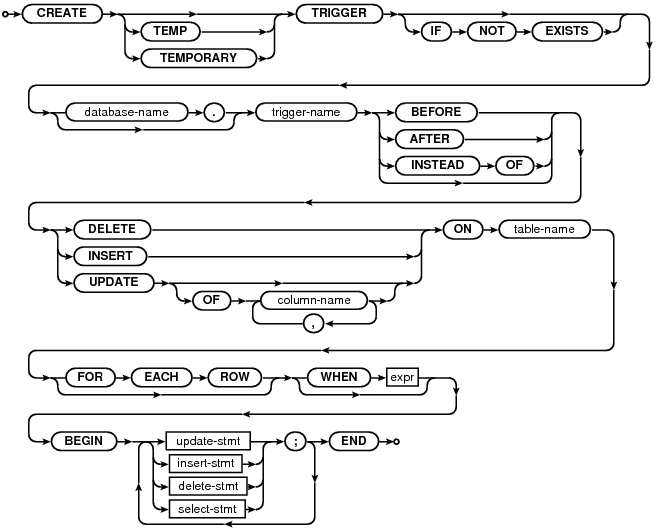

Choose any three.
|
|
SQL As Understood By SQLite
CREATE TRIGGER
create-trigger-stmt:

The CREATE TRIGGER statement is used to add triggers to the database schema. Triggers are database operations that are automatically performed when a specified database event occurs.
A trigger may be specified to fire whenever a DELETE, INSERT, or UPDATE of a particular database table occurs, or whenever an UPDATE occurs on on one or more specified columns of a table.
At this time SQLite supports only FOR EACH ROW triggers, not FOR EACH STATEMENT triggers. Hence explicitly specifying FOR EACH ROW is optional. FOR EACH ROW implies that the SQL statements specified in the trigger may be executed (depending on the WHEN clause) for each database row being inserted, updated or deleted by the statement causing the trigger to fire.
Both the WHEN clause and the trigger actions may access elements of the row being inserted, deleted or updated using references of the form "NEW.column-name" and "OLD.column-name", where column-name is the name of a column from the table that the trigger is associated with. OLD and NEW references may only be used in triggers on events for which they are relevant, as follows:
| INSERT | NEW references are valid |
| UPDATE | NEW and OLD references are valid |
| DELETE | OLD references are valid |
If a WHEN clause is supplied, the SQL statements specified are only executed for rows for which the WHEN clause is true. If no WHEN clause is supplied, the SQL statements are executed for all rows.
The BEFORE or AFTER keyword determines when the trigger actions will be executed relative to the insertion, modification or removal of the associated row.
An ON CONFLICT clause may be specified as part of an UPDATE or INSERT action within the body of the trigger. However if an ON CONFLICT clause is specified as part of the statement causing the trigger to fire, then conflict handling policy of the outer statement is used instead.
Triggers are automatically dropped when the table that they are associated with (the table-name table) is dropped. However if the the trigger actions reference other tables, the trigger is not dropped or modified if those other tables are dropped or modified.
Triggers are removed using the DROP TRIGGER statement.
Syntax Restrictions On UPDATE, DELETE, and INSERT Statements Within Triggers
The UPDATE, DELETE, and INSERT statements within triggers do not support the full syntax for UPDATE, DELETE, and INSERT statements. The following restrictions apply:
The name of the table to be modified in an UPDATE, DELETE, or INSERT statement must be an unqualified table name. In other words, one must use just "tablename" not "database.tablename" when specifying the table. The table to be modified must exist in the same database as the table or view to which the trigger is attached.
The "INSERT INTO table DEFAULT VALUES" form of the INSERT statement is not supported.
The INDEXED BY and NOT INDEXED clauses are not supported for UPDATE and DELETE statements.
The ORDER BY and LIMIT clauses on UPDATE and DELETE statements are not supported. ORDER BY and LIMIT are not normally supported for UPDATE or DELETE in any context but can be enabled for top-level statements using the SQLITE_ENABLE_UPDATE_DELETE_LIMIT compile-time option. However, that compile-time option only applies to top-level UPDATE and DELETE statements, not UPDATE and DELETE statements within triggers.
INSTEAD OF trigger
Triggers may be created on views, as well as ordinary tables, by specifying INSTEAD OF in the CREATE TRIGGER statement. If one or more ON INSERT, ON DELETE or ON UPDATE triggers are defined on a view, then it is not an error to execute an INSERT, DELETE or UPDATE statement on the view, respectively. Instead, executing an INSERT, DELETE or UPDATE on the view causes the associated triggers to fire. The real tables underlying the view are not modified (except possibly explicitly, by a trigger program).
Note that the sqlite3_changes() and sqlite3_total_changes() interfaces do not count INSTEAD OF trigger firings, but the count_changes pragma does count INSTEAD OF trigger firing.
Examples
Assuming that customer records are stored in the "customers" table, and that order records are stored in the "orders" table, the following trigger ensures that all associated orders are redirected when a customer changes his or her address:
CREATE TRIGGER update_customer_address UPDATE OF address ON customers
BEGIN
UPDATE orders SET address = new.address WHERE customer_name = old.name;
END;
With this trigger installed, executing the statement:
UPDATE customers SET address = '1 Main St.' WHERE name = 'Jack Jones';
causes the following to be automatically executed:
UPDATE orders SET address = '1 Main St.' WHERE customer_name = 'Jack Jones';
Cautions On The Use Of BEFORE triggers
If a BEFORE UPDATE or BEFORE DELETE trigger modifies or deletes a row that was to have been updated or deleted, then the result of the subsequent update or delete operation is undefined. Furthermore, if a BEFORE trigger modifies or deletes a row, then it is undefined whether or not AFTER triggers that would have otherwise run on those rows will in fact run.
The value of NEW.rowid is undefined in a BEFORE INSERT trigger in which the rowid is not explicitly set to an integer.
Because of the behaviors described above, programmers are encouraged to prefer AFTER triggers over BEFORE triggers.
The RAISE() function
A special SQL function RAISE() may be used within a trigger-program, with the following syntax
raise-function:

When one of the first three forms is called during trigger-program execution, the specified ON CONFLICT processing is performed (either ABORT, FAIL or ROLLBACK) and the current query terminates. An error code of SQLITE_CONSTRAINT is returned to the application, along with the specified error message.
When RAISE(IGNORE) is called, the remainder of the current trigger program, the statement that caused the trigger program to execute and any subsequent trigger programs that would of been executed are abandoned. No database changes are rolled back. If the statement that caused the trigger program to execute is itself part of a trigger program, then that trigger program resumes execution at the beginning of the next step.